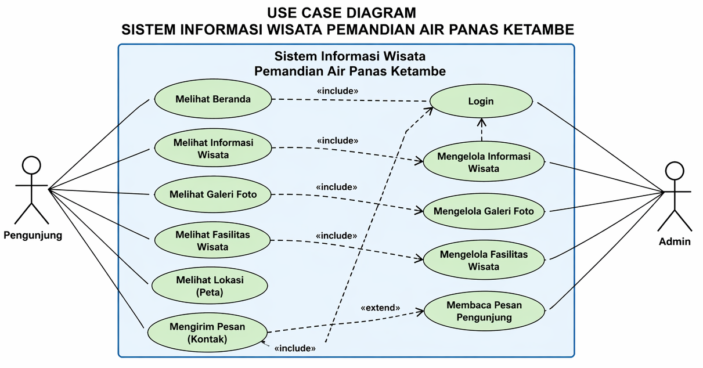
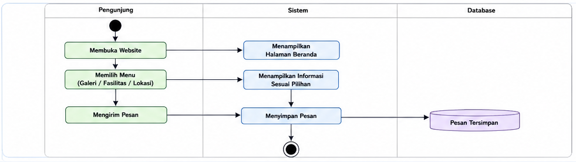
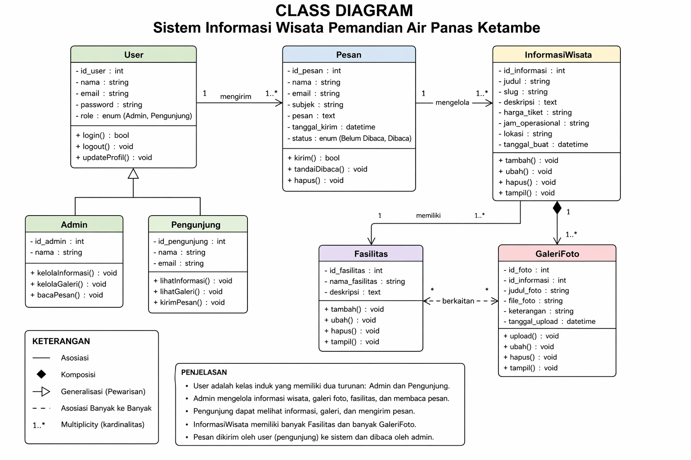

Dokumentasi Perancangan Sistem & Use Case Diagram
Sistem Informasi Wisata Pemandian Air Panas Ketambe merupakan platform digital yang dirancang untuk mengoptimalkan promosi dan manajemen informasi wisata alam di Ketambe. Sistem ini dibangun untuk memberikan aksesibilitas data bagi wisatawan secara mandiri, mulai dari eksplorasi fasilitas, dokumentasi galeri, hingga panduan lokasi geografis. Tujuan utamanya adalah menciptakan sinkronisasi informasi antara pengelola (Admin) dan wisatawan (Pengunjung) melalui satu pintu sistem yang terintegrasi.

Activity Diagram menggambarkan alur aktivitas sistem.

Interaksi Pengunjung hingga pesan tersimpan dan dibaca admin.
Class Diagram menggambarkan struktur data dan relasi antar kelas dalam sistem. Diagram ini membantu dalam perancangan database dan logika program.

Berikut adalah tampilan prototype website Sistem Informasi Wisata Ketambe yang telah dibuat. Prototype ini menunjukkan implementasi dari desain yang telah dirancang sebelumnya.
Dalam pembuatan sistem ini, saya memahami bagaimana proses analisis hingga implementasi website dilakukan. Mulai dari perancangan UML, desain tampilan, hingga pembuatan fitur interaktif.